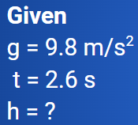
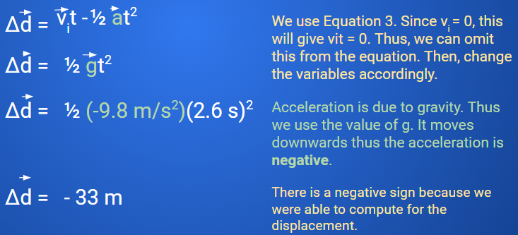
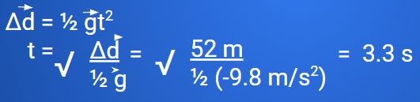
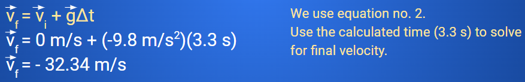

Callout
Occurs when an object is allowed to fall freely.
All objects that move freely in the vertical direction experience acceleration due to gravity.
= acceleration due to gravity
= 9.8 m/s2
Assuming there is no air resistance or other force
affecting the motion besides gravity.
To solve problems, use five key motion equations.
A ball is dropped from the roof of a building. If it takes the ball 2.6 s to reach the ground, how tall is the building?

Callout
Solution: We assume that the initial velocity is zero since the ball comes from rest. The height of the building is represented by distance. We change average acceleration to acceleration due to gravity.

Callout
A hot air balloon is hovering 52 meters above the ground. A penny is dropped from the balloon. Assume no air resistance.
1. How long does it take for the penny to hit the ground? Try to answer this on your own.
Solution: Analyzing the given, we have the Δd, and g and we’re looking for time. We assume that the initial velocity of the penny is zero because it starts at rest. Thus, we use the simplified equation 3 from before but we need to rearrange it.

Callout
2. What is its final velocity just before it hits the ground?
Solution: Analyzing the given, we have the Δd, g, and time. We assume that the initial velocity of the penny is zero because it starts at rest.
